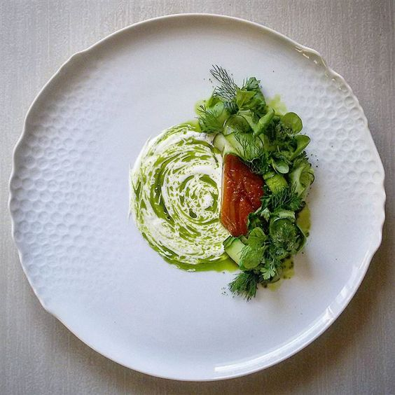

Sakura chicken, curry hollandaise & ginger flower rice
 Smoked salmon served with baby pickled radishes sauce
Chicken & Courgette, Parma Whey & Purple Glazed Potatoes
Duck garnished with parsnip, figs, beets, basil leaves & pumpkin
Smoked salmon served with baby pickled radishes sauce
Chicken & Courgette, Parma Whey & Purple Glazed Potatoes
Duck garnished with parsnip, figs, beets, basil leaves & pumpkin
Slow cooked pork belly in artizanal beer with lentils and parsnip
Lamb shoulder, pumpkin puree, potato pave, oyster emulsion
Wahoo with Fingerlings, Smoked Bacon, Beech Mushrooms
Gurnard, Early Parsnip & Carrot with Shellfish Sauce

Smoked mackerel, cucumber & chive oil, buttermilk, peas powder
 Poached Rhubarb, raspberries,white chocolate & sea herbs
Cooked for 48h short rib, watercress & Grelotte onions
Pork & eel with kale & sweet potato and roasted carrot purèe
Poached Rhubarb, raspberries,white chocolate & sea herbs
Cooked for 48h short rib, watercress & Grelotte onions
Pork & eel with kale & sweet potato and roasted carrot purèe
Veal Saltimbocca Wrapped in a Sage Farce and Prosciutto
Grilled and glazed lamb, smoked cheese & wild garlic
Grilled black angus, Barletta onions,onion mustard & Thyme
seared scallops, pea puree, bacon-hazelnut crumble
Roast Beef, Brussels Sprouts,Sea Buckthorn & Glaze Sauce
Pork tenderloin, mangold with rice, celery, beetroot, herbs.
Roasted duck breast brown butter salsify beet purée
Pureed Apple, poached celery & roasted sesame paste desert